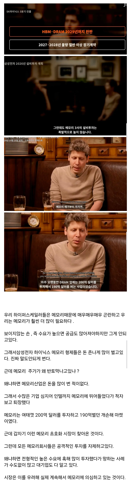

한 줄 요약
애플 씨발럼

한 줄 요약
애플 씨발럼
투자 자체를 안하니까 시장이 계속 의심한다는 이야기임
경영자의 시선은 다르니까
낮은 확률로 회사가 망할 수도 있는데 캐파 천천히 늘려야지
그니까 다른데
과거의 PTSD때문에 번 돈이 그대로 투자로 들어갈 수 없다는점
+ 이 호황이 과거 걸어온 길을 보면 얼마나 갈지 모르는 새로운 길이라는 점이 문제라는거 ㅋㅋ
삼성 스탁 너무 쌓였는데 안팔려서 망하네 망네 하던게 불과 3년전 아닌가
개붕이 보다 째용이나 원이가 더 잘 판단하겠지ㅋㅋ
지금 그때랑 똑같음ㅋㅋ
예전 붐이랑 비교해서 수요 증가율 차이 없다더라
가격상승으로 견인된거ㅋㅋ
삼전7만 하닉20만좌 피셜
이전과 달리 생산을 늘리지않았을뿐 수요증가율은 다를게없다
데이터센터 더 짓는거랑은 별개로 수요가 늘었다고 케파 확 늘려서 많이 찍으면 램값 떨어졌을때 그대로 적자로 돌아옴ㅋㅋㅋ
여러요인들 (미국 정권의 반ai정서+메모리시장전반의 생산확대에 대한 거부감 등등)로 인해 시장 자체가 지금 상황을 거품으로 인식중임.
지금 반도체 관련해서 한발 걸쳐진 우리회사도 영업이익 역대급인데 공장, 창고 증축하니 외주창고 계약해서 인원 파견보내서 2배럭 돌리니마니 충원하면 망하니 하면서 임원끼리 대립중임
이게 생산설비 증설해서 안정화되기만 하면 엄청 쏟아져나와서 그럼. 공급이 금방 따라잡는구조
ai가 최적화되어서 램 적게써도 되는거면 데센 더 안짓게 되는거지 그럼 과잉생산. 개인이 로컬로 돌리는것도 지금 vram최적화 진행중임
확정은 3년치인데 시장은 5년치를 기대하고 있는데다 시설 확충은 최소 5년 후를 봐야하니..
중국이 쫓고있기때문에 결국 설비투자를 해야 하긴 함
오히려 그 반대 아닌가? 중국이 시작하면 절대못막음 결국 파이 나눠먹어야할텐데. 괜히 설비 늘렸다가 악성제고만 늘어날수도
치킨게임으로 죽이겠다는 발상인거 같은데, 중국 반도체는 뒷배가 공산당임
절대 못이겨
중국이랑 싸우려면 설비 투자가 아니라 R&D 투자가 중요한 거.
사실 존나 고생해서 R&D투자해도 중국이 도둑질해가면 가성비 존나 떨어져서 ㅋㅋㅋ
중국이랑 싸우려면 미국이 무역제재해야지
창신?ㅋㅋㅋㅋㅋ
치킨게임 해야 한다고 현금 쌓아놓고 ㅋ
증설 잘 못 하면 ㅈ될 수 있는 사례를 잘 봤지
니들 빅테크가 통수친적있잖아
학습된공포
메모리시장 치킨게임 할 때
가격 싸서 좋았는데....
결국 대머리 게이 둘이 씨발 개 ㅈ같이 만들어놓은 구조
창신이 무한정 물량 늘릴거임. 머지않아 치킨게임 하겠지.
애플 시발년들 때문에 중국 배터리도 크고 ㅋㅋㅋ
진짜 인류의 씹새끼들임
대 황 애 플

치킨게임을 해야... 램을 살수있다... 컴을 살수 있다고...
https://www.dogdrip.net/710033286
예전에 내가 썼던글 생각나서 써봄
그나마 삼하마는 곡소리나 냈지. 밑에 딸린 소부장 기업 중에는 아직도 증설한 설비 놀리고 있는 곳들이 대다수임
애플만 욕하는게 너무 웃김ㅋㅋ 삼하마가 진짜..어떤지 모르고..
이건 삼하마 욕하는게 아니지 않음?? 메모리기업들이 증설 못하는게 자기들이 아니고 자기들 소부장 공급 업체가 진짜 망하니까 안한다는거지..
애플때문만이 아냐ㅋㅋ 애플하나때문일거라 생각하지마
샘쿤! 대황애플 덕분인걸 잊었나?
대 황 플
우린 지금 규모가 한계임. 기술력이나 계속 지키면서 최대한 뽑아먹고 지금 들어온 수익으로 차세대 비전을 찾아야지
아 너네나라 어떤 게이놈이 다 망쳐놨자나
그짓거리만 못하게 하면 투자 안할 이유가 있나
즉, 싸이클이 끝나면 돈을 못버니
주가가 내려갈 거고
어차피 내려갈 주식이니
굳이 장기투자 안하고 적당히 먹고 나오고
결국 수요가 끊긴단 얘기지 뭐
요약 애플이 한번 구라까서 생산 안늘리고 보수적으로 하는중
세상에서 제일 죽이고싶은게이
1위 팀쿡게이
2위 알트만게이
쿡게이가 은퇴하면서 순위 바뀌는중
애플 개객기들
개손해마켓인데 왜 여태까지 살아있었고 다들 유지한겨...??
그 메모리업체들이 이 서플라이체인 맨 마지막이 아니니까.. 결국 손해 다 떠앉는 얘들은 따로 있다는 뜻... 그나마 메모리업체는 과점시장이라 버틸여력이라도 있는데 그 아래는 버틸여력이 없어서 파산하고 또 새로운 얘가 들어오고 그럴듯?

메모리는 사이클 사업이고 메모리 이 호황도 2027년 말에서 2028년에 꺾일거라는거 모두다 알고 있음. 이번만은 AI 때문에 다르다? 수십년 동안 매번 다양한 이유로 있었던 레파토리.
ai 붐이 확 꺼질 가능성도 조금은 있음. 가령 사이즈를 늘렸는데 ai 성능이 더 안좋아지더라... agi는 불가능 하다... 이러면 확 꺼져버릴 것임..
사이클 산업이라 저점매수아니면 신규 진입은 그렇다는거지. 외인들의 기계적인 매도? 어쩔수 없는거임.
이번에 사이클이 길어진것 뿐 언제 다운사이클이 올지 모름. 다만 변수는 lta로 어느정도 실적 방어는 되겠지
싸이클산업이라 당연한거고 그싸이클 좆같아서 증설 안하겠단거 뿐이지
그때랑 지금은 많이 다르지않음...? AI 데이터센터를 더짓네 마네 계속 달리는중인데